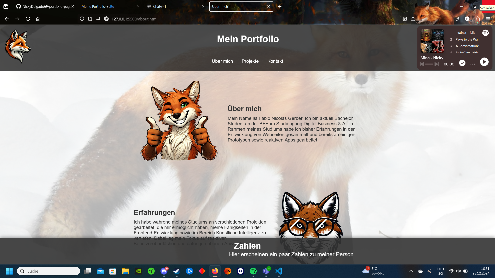

Projektübersicht

Projekt 1: Portfolio-Website
Beschreibung: Eine einfache Portfolio-Seite, die HTML, CSS und JavaScript verwendet, um mich und meine bearbeiteten Projekte zu präsentieren.
GitHub-Link
Projekt 2: Catch-IT
Beschreibung: Ein Prototyp für eine Speseneinreichungs Applikation, die im FIGMA als Prototyp erstellt wurde.
FIGMA-Link
Projekt 3: Regenbogenforellen Fangstatistiken Schweiz
Beschreibung: Eine interaktive Karte mit denen die registrierten Regenbogenforellen Fänge in der Schweiz nach Kanton aufgezeigt werden inklusive Slider Einstellung.
Shinyapps-Link